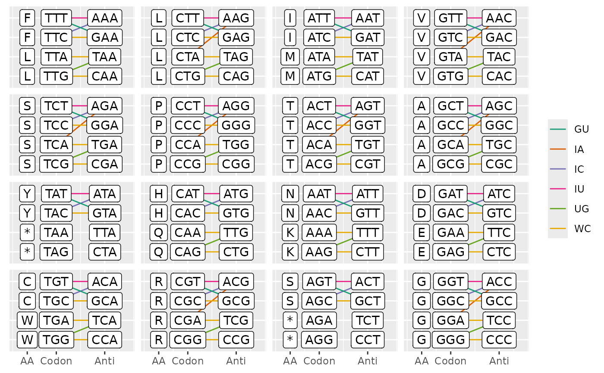
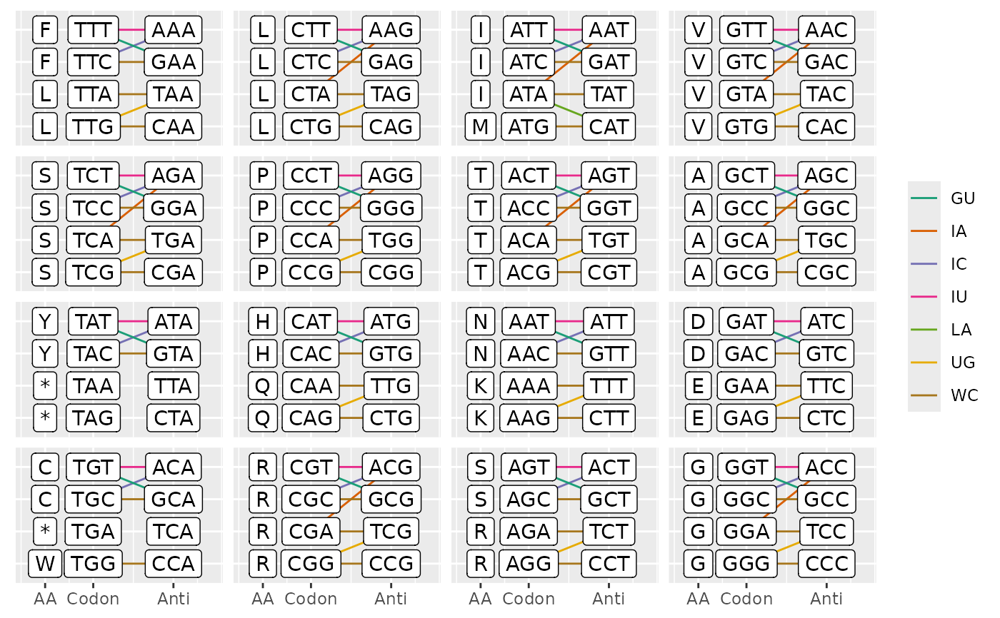

plot_ca_pairs show possible codon-anticodons pairings
Usage
plot_ca_pairs(codon_table = get_codon_table(), pairs = pairs)Examples
# plot possible codon and anticodon pairings for the vertebrate mitochondrial genetic code
ctab <- get_codon_table(gcid = '2')
pairs <- ca_pairs(ctab, plot = TRUE)
plot_ca_pairs(ctab, pairs)

# plot possible codon and anticodon pairings for the standard genetic code in bacteria
plot_ca_pairs(pairs = ca_pairs(domain = "Bacteria", plot = TRUE))
